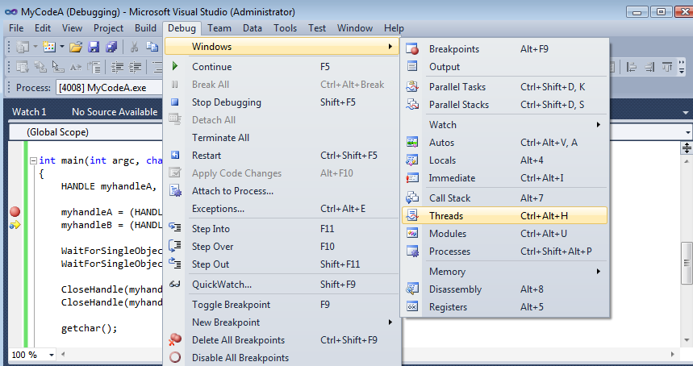
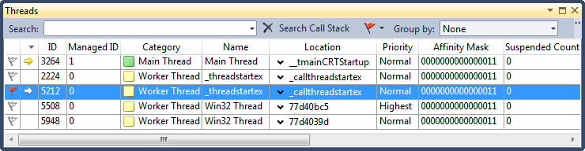
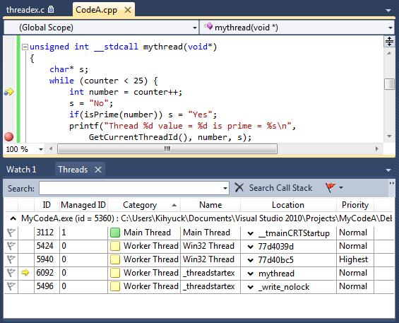
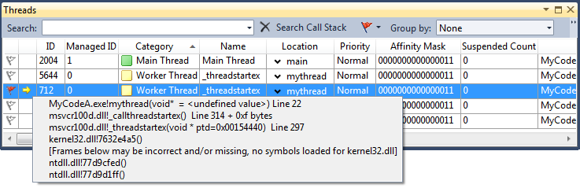
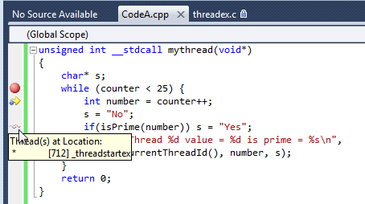
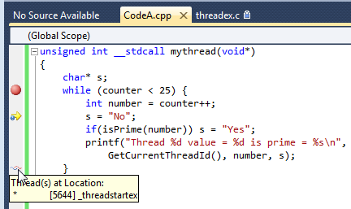
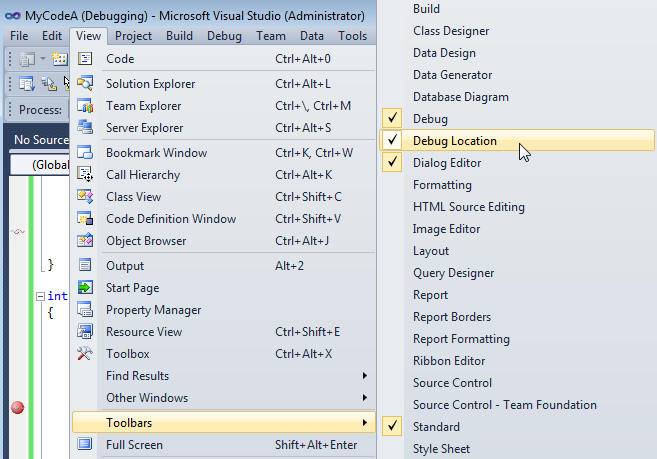

C++ Tutorial
Multi-Threaded Programming II
Native Thread for Win32 (B)
(Synchronization and Resource Sharing) - 2017
In the following example, two threads are used to calculate all the prime numbers in a given range.
It demonstrates a test whether a number is prime number:
#include <Windows.h>
#include <process.h>
#include <stdio.h>
#include <math.h>
volatile int counter = 0;
int isPrime(int n)
{
for(int i = 2; i < (int)(sqrt((float)n) + 1.0) ; i++) {
if (n % i == 0) return 0;
}
return 1;
}
unsigned int __stdcall mythread(void*)
{
char* s;
while (counter < 25) {
int number = counter++;
s = "No";
if(isPrime(number)) s = "Yes";
printf("Thread %d value = %d is prime = %s\n",
GetCurrentThreadId(), number, s);
}
return 0;
}
int main(int argc, char* argv[])
{
HANDLE myhandleA, myhandleB;
myhandleA = (HANDLE)_beginthreadex(0, 0, &mythread;, (void*)0, 0, 0);
myhandleB = (HANDLE)_beginthreadex(0, 0, &mythread;, (void*)0, 0, 0);
WaitForSingleObject(myhandleA, INFINITE);
WaitForSingleObject(myhandleB, INFINITE);
CloseHandle(myhandleA);
CloseHandle(myhandleB);
getchar();
return 0;
}
Output is:
Thread 2652 value = 0 is prime = Yes Thread 2652 value = 2 is prime = Yes Thread 5972 value = 1 is prime = Yes Thread 5972 value = 4 is prime = No Thread 5972 value = 5 is prime = Yes Thread 5972 value = 6 is prime = No Thread 5972 value = 7 is prime = Yes Thread 5972 value = 8 is prime = No Thread 5972 value = 9 is prime = No Thread 5972 value = 10 is prime = No Thread 5972 value = 11 is prime = Yes Thread 5972 value = 12 is prime = No Thread 5972 value = 13 is prime = Yes Thread 5972 value = 14 is prime = No Thread 5972 value = 15 is prime = No Thread 5972 value = 16 is prime = No Thread 2652 value = 3 is prime = Yes Thread 5972 value = 17 is prime = Yes Thread 5972 value = 19 is prime = Yes Thread 5972 value = 20 is prime = No Thread 5972 value = 21 is prime = No Thread 5972 value = 22 is prime = No Thread 5972 value = 23 is prime = Yes Thread 5972 value = 24 is prime = No Thread 2652 value = 18 is prime = No
In the example, we created two threads which tested numbers. Using two threads, however, would cause a data race if both threads accessed the variable counter at the same time. So, we may need to protect the increment of the counter to avoid data races. In the following sections, after tasting the thread debugging briefly, we'll investigate several approaches to address this problem.
The debugging of multithreaded application is a huge topic, and it will be presented in other chapters of this tutorial. But I'll briefly show how to start debugging using Visual Studio 2010 using the same example from the previous section.
- Set a break point and run the example in debug mode.
- Debug > Windows > Threads

- Then, we get the Threads window.

- In the Threads window, you can examine and work with threads in the application that you are debugging.
The Threads window contains a table where each row represents a thread in your application. By default, the table lists all threads in your application, but you can filter the list to show only the threads that interest you. Each column contains a different type of information. You can also hide some columns. If you display all columns, the following information appears, from left to right:- The flag column, where you can mark a thread to which you want to pay special attention. For information about how to flag a thread.
- The active thread column, where a yellow arrow indicates an active thread. An outline of an arrow indicates the thread where execution broke into the debugger.
- The ID column, which contains the identification number for each thread.
- The Managed ID column, which contains the managed identification numbers for managed threads.
- The application Category column, which categorizes threads as user interface threads, remote procedure call handlers, or worker threads. A special category identifies the main thread of the application.
- The Name column, which identify each thread by name, if it has one, or as
. - The Location column, which shows where the thread is running. You can expand this location to show the full call stack for the thread.
- The Priority column, which contains the priority or precedence that the system has assigned to each thread.
- The Affinity Mask column, which is an advanced column that is usually hidden. This column shows the processor affinity mask for each thread. In a multiprocessor system, the affinity mask determines which processors on which a thread can run.
- The Suspended column shows the suspend count. A thread must have a suspend count of zero to execute. The native debugger will not show an increment of the Suspend counter when the Freeze command is selected from the context menu, but with managed debugging, the Suspend count will reflect Freeze and Thaw commands.
- While we step through the code, we can see which thread is working actively.

- One of the features that thread window offers is the Thread Call Stack Tooltips.

- Another features is Show Threads in Source
, which thread is at the break point.


- Around this time, you may already know that there is a Debug Location Bar.

Win32 provides following types of objects that can be used for thread synchronization:
- Mutex
- CRITICAL_SECTION
- Semaphore
- Event
Mutex and CRITICAL_SECTION objects are Win32 versions of the lock objects, while Win32 Semaphores are counting semaphores.
Critical section (see here, too) is a method of ensuring only a single thread executes a region of code. It is declared within a process and are not resources provided by the kernel. In other words, critical section is a lock object that can only be used to synchronize threads in the same process, and they do not have handles. Because they are within the process, access to critical sections is quicker than it would be if access had to be brokered by the kernel. This is one of the defferences: critical sections do not go down to the kernel level, but mutex does go down to the kernel level.
The following code declares a critical section structure, and then initializes it by calling InitializeCriticalSection(). Once the program has finished with it, deletes it by calling DeleteCriticalSection():
InitializeCriticalSection(&critical;); DeleteCriticalSection(&critical;);
When a thread needs to enter the critical section, it calls EnterCriticalSection(). If no other thread is in the critical section, the calling thread acquires it and continues execution. If another thread is in the critical section, the calling thread will sleep until the thread executing the critical section leaves it by calling LeaveCriticalSection(). A thread calling LeaveCriticalSection() must be the owner of the critical section. The thread that calls EnterCriticalSection() will not return until it has obtained access to the critical section. There is no concept of a timeout.
The following example demonstrates how we use a critical section to protect access to the counter variable:
#include <Windows.h>
#include <process.h>
#include <stdio.h>
#include <math.h>
volatile int counter = 0;
CRITICAL_SECTION critical;
int isPrime(int n)
{
for(int i = 2; i < (int)(sqrt((float)n) + 1.0) ; i++) {
if (n % i == 0) return 0;
}
return 1;
}
unsigned int __stdcall mythread(void*)
{
char* s;
while (counter < 25) {
EnterCriticalSection(&critical;);
int number = counter++;
LeaveCriticalSection(&critical;);
s = "No";
if(isPrime(number)) s = "Yes";
printf("Thread %d value = %d is prime = %s\n",
GetCurrentThreadId(), number, s);
}
return 0;
}
int main(int argc, char* argv[])
{
HANDLE myhandleA, myhandleB;
InitializeCriticalSection(&critical;);
myhandleA = (HANDLE)_beginthreadex(0, 0, &mythread;, (void*)0, 0, 0);
myhandleB = (HANDLE)_beginthreadex(0, 0, &mythread;, (void*)0, 0, 0);
WaitForSingleObject(myhandleA, INFINITE);
WaitForSingleObject(myhandleB, INFINITE);
CloseHandle(myhandleA);
CloseHandle(myhandleB);
getchar();
DeleteCriticalSection(&critical;);
return 0;
}
The output from the run is similar to the results:
Thread 5716 value = 0 is prime = Yes Thread 5716 value = 1 is prime = Yes Thread 5716 value = 2 is prime = Yes Thread 5716 value = 3 is prime = Yes Thread 5716 value = 5 is prime = Yes Thread 5716 value = 6 is prime = No Thread 5716 value = 7 is prime = Yes Thread 5716 value = 8 is prime = No Thread 5716 value = 9 is prime = No Thread 5716 value = 10 is prime = No Thread 5716 value = 11 is prime = Yes Thread 5716 value = 12 is prime = No Thread 5716 value = 13 is prime = Yes Thread 5716 value = 14 is prime = No Thread 5716 value = 15 is prime = No Thread 5716 value = 16 is prime = No Thread 5716 value = 17 is prime = Yes Thread 5436 value = 4 is prime = No Thread 5436 value = 19 is prime = Yes Thread 5436 value = 20 is prime = No Thread 5436 value = 21 is prime = No Thread 5436 value = 22 is prime = No Thread 5716 value = 18 is prime = No Thread 5716 value = 24 is prime = No Thread 5436 value = 23 is prime = Yes
Putting threads to sleep and waking them up again is time-consuming since it involves entering the kernel. All critical sections should be designed to be as short-lived as possible. It is likely that by the time the thread has been put to sleep, the thread that was in the critical section will already have left it. So, making the waiting thread sleep and then waking it up again is just a waste of time.
We have two alternatives:
- We can call TryEnterCriticalSection().
- The other approach is to have the thread which wants to enter the critical section spin briefly in the hope that the thread currently in the critical section will soon leave.
TryEnterCriticalSection() will return immediately returning either true if the thread has acquired access to the critical section, or false if another thread is currently in the critical section.
Here is the syntax of the function:
BOOL WINAPI TryEnterCriticalSection( __inout LPCRITICAL_SECTION lpCriticalSection );
where the lpCriticalSection [in, out] is a pointer to the critical section object.
So, the code that protects access to the counter variable could be written using TryEnterCriticalSection() as in the example below:
#ifndef _WIN32_WINNT // Allow use of features specific to Windows XP or later.
#define _WIN32_WINNT 0x0501 // Change this to the appropriate value to target other versions of Windows.
#endif
#include <Windows.h>
#include <process.h>
#include <stdio.h>
#include <math.h>
volatile int counter = 0;
CRITICAL_SECTION critical;
int isPrime(int n)
{
for(int i = 2; i < (int)(sqrt((float)n) + 1.0) ; i++) {
if (n % i == 0) return 0;
}
return 1;
}
unsigned int __stdcall mythread(void*)
{
char* s;
while (counter < 25) {
while(!TryEnterCriticalSection(&critical;)){}
int number = counter++;
LeaveCriticalSection(&critical;);
s = "No";
if(isPrime(number)) s = "Yes";
printf("Thread %d value = %d is prime = %s\n",
GetCurrentThreadId(), number, s);
}
return 0;
}
int main(int argc, char* argv[])
{
HANDLE myhandleA, myhandleB;
InitializeCriticalSection(&critical;);
myhandleA = (HANDLE)_beginthreadex(0, 0, &mythread;, (void*)0, 0, 0);
myhandleB = (HANDLE)_beginthreadex(0, 0, &mythread;, (void*)0, 0, 0);
WaitForSingleObject(myhandleA, INFINITE);
WaitForSingleObject(myhandleB, INFINITE);
CloseHandle(myhandleA);
CloseHandle(myhandleB);
getchar();
DeleteCriticalSection(&critical;);
return 0;
}
Output is almost identical to the previous results.
In the code,
while(!TryEnterCriticalSection(&critical;)){}
the line would cause the process to spin continuously until it gets the lock. One of the problems with having a thread spin is that it is potentially depriving other threads of processor time. The primary concern would be the case when the spinning thread stops the other thread, which is currently in the critical section, from getting back onto the processor. So, this style of code is one that should be done very carefully.
The other approach is to have the thread which wants to enter the critical section spin briefly in the hope that the thread currently in the critical section will soon leave. If the other thread leaves the critical section, the spinning thread can immediately enter the critical section. Once the thread has spun for a predetermined count, the thread goes to sleep until the other thread eventually leaves the critical section. This approach represents a tradeoff between the immediacy of spinning for access to the critical section and the poor utilization of resources that spinning causes.
Critical sections support this idea of spinning for a short time before sleeping. There are two ways of setting the number of times that a thread calling EnterCriticalSection() will spin before it goes to sleep. The critical section can be initialized with the value through the call InitializeCriticalSectionAndSpinCount(), which takes the pointer to the critical section, and the spin count as parameters. Or, once the critical section has been created,
the spin count can be set through a call to
SetCriticalSectionSpinCount():
InitializeCriticalSectionAndSpinCount(&critical;, 1000); SetCriticalSectionSpinCount(&critical;, 1000);
In general, a mutex is a common name for a program object that negotiates mutual exclusion among threads, also called a lock.
Mutexes are kernel object, which enables them to be shared between processes. This also means that mutex-protected sections are heavier weight than critical sections.
Mutexes are created by calling CreateMutex() or CreateMutexEx(). The call returns the handle to the newly created mutex object.
Here is the syntax:
HANDLE WINAPI CreateMutex( __in_opt LPSECURITY_ATTRIBUTES lpMutexAttributes, __in BOOL bInitialOwner, __in_opt LPCTSTR lpName );
Parameters:
- The first parameter to the CreateMutex() call is a pointer to the security attributes, or zero if the default security attributes should be used.
- The second parameter is a boolean that indicates if the mutex should be created in the state of being already acquired by the calling thread.
- The final parameter is an optional name for the mutex.
The CreateMutex() call takes the security attributes: an optional name for the mutex, a flag that has either the value 0 or the value CREATE_MUTEX_INITIAL_OWNER, which indicates that the mutex should be created as owned by the calling thread, and a mask that sets the access permissions for the mutex.
Once the application has finished with the mutex, the kernel resources need to be freed by calling CloseHandle(). The following example demonstrates the process of creating and releasing a mutex:
HANDLE mutex; mutex = CreateMutex(0, 0, 0); CloseHandle(mutex);
The application should call WaitForSingleObject() to acquire the mutex. The function either returns with the mutex acquired or returns after the specified timeout. Once the thread has completed, the section of code protected by the mutex can be released by calling ReleaseMutex(). The operations WaitForSingleObject() and ReleaseMutex() are analogous to EnterCriticalSection() and LeaveCriticalSection(), respectively. The following code shows how:
#include <Windows.h>
#include <process.h>
#include <stdio.h>
#include <math.h>
volatile int counter = 0;
HANDLE mutex;
int isPrime(int n)
{
for(int i = 2; i < (int)(sqrt((float)n) + 1.0) ; i++) {
if (n % i == 0) return 0;
}
return 1;
}
unsigned int __stdcall mythread(void*)
{
char* s;
while (counter < 25) {
WaitForSingleObject(mutex, INFINITE);
int number = counter++;
ReleaseMutex(mutex);
s = "No";
if(isPrime(number)) s = "Yes";
printf("Thread %d value = %d is prime = %s\n",
GetCurrentThreadId(), number, s);
}
return 0;
}
int main(int argc, char* argv[])
{
HANDLE myhandleA, myhandleB;
mutex = CreateMutex(0, 0, 0);
myhandleA = (HANDLE)_beginthreadex(0, 0, &mythread;, (void*)0, 0, 0);
myhandleB = (HANDLE)_beginthreadex(0, 0, &mythread;, (void*)1, 0, 0);
WaitForSingleObject(myhandleA, INFINITE);
WaitForSingleObject(myhandleB, INFINITE);
CloseHandle(myhandleA);
CloseHandle(myhandleB);
getchar();
CloseHandle(mutex);
return 0;
}
Output is almost identical to the previous results.
As you may have noticed, mutex object have the following additional features compared to the critical section:
- A timeout can be specified on the request to access a mutex.
- When the mutex is created, there is an argument that specifies whether the thread that creates the mutex object is to be considered as the initial owner of the object.
The semaphores are a way of keeping track of a count of numbers as well as a way of communicating resource availability between threads. They can be used as an alternative implementation of a mutex at the simplest level. For a more complex use would be to communicate readiness between multiple threads.
A semaphore can be created by calling CreateSemaphore(), which takes four parameters:
syntax:
HANDLE WINAPI CreateSemaphore( __in_opt LPSECURITY_ATTRIBUTES lpSemaphoreAttributes, __in LONG lInitialCount, __in LONG lMaximumCount, __in_opt LPCTSTR lpName );
parameters:
- lpSemaphoreAttributes [in, optional]
A pointer to a SECURITY_ATTRIBUTES structure. If this parameter is NULL, the handle cannot be inherited by child processes.
The lpSecurityDescriptor member of the structure specifies a security descriptor for the new semaphore. If this parameter is NULL, the semaphore gets a default security descriptor. The ACLs in the default security descriptor for a semaphore come from the primary or impersonation token of the creator. - lInitialCount [in]
The initial count for the semaphore object. This value must be greater than or equal to zero and less than or equal to lMaximumCount. The state of a semaphore is signaled when its count is greater than zero and nonsignaled when it is zero. The count is decreased by one whenever a wait function releases a thread that was waiting for the semaphore. The count is increased by a specified amount by calling the ReleaseSemaphore function. - lMaximumCount [in]
The maximum count for the semaphore object. This value must be greater than zero. - lpName [in, optional]
The name of the semaphore object. The name is limited to MAX_PATH characters. Name comparison is case sensitive.
If lpName matches the name of an existing named semaphore object, this function requests the SEMAPHORE_ALL_ACCESS access right. In this case, the lInitialCount and lMaximumCount parameters are ignored because they have already been set by the creating process. If the lpSemaphoreAttributes parameter is not NULL, it determines whether the handle can be inherited, but its security-descriptor member is ignored.
If lpName is NULL, the semaphore object is created without a name. If lpName matches the name of an existing event, mutex, waitable timer, job, or file-mapping object, the function fails and the GetLastError function returns ERROR_INVALID_HANDLE. This occurs because these objects share the same name space.
The name can have a "Global\" or "Local\" prefix to explicitly create the object in the global or session name space. The remainder of the name can contain any character except the backslash character (\). Fast user switching is implemented using Terminal Services sessions. Kernel object names must follow the guidelines outlined for Terminal Services so that applications can support multiple users.
The second way of creating a semaphore is through the CreateSemaphoreEx() call. This takes the same first four parameters but adds two more:
syntax:
HANDLE WINAPI CreateSemaphoreEx( __in_opt LPSECURITY_ATTRIBUTES lpSemaphoreAttributes, __in LONG lInitialCount, __in LONG lMaximumCount, __in_opt LPCTSTR lpName, __reserved DWORD dwFlags, __in DWORD dwDesiredAccess );
parameters:
- dwFlags
This parameter is reserved and must be 0. - dwDesiredAccess [in] The access mask for the semaphore object. Passing SEMAPHORE_ALL_ACCESS as this parameter will create a semaphore that can be shared between processes.
The last way of getting a handle to a semaphore is to call OpenSemaphore(), passing in three parameters:
syntax:
HANDLE WINAPI OpenSemaphore( __in DWORD dwDesiredAccess, __in BOOL bInheritHandle, __in LPCTSTR lpName );
parameters:
- dwDesiredAccess [in]
The access to the semaphore object. The function fails if the security descriptor of the specified object does not permit the requested access for the calling process. - bInheritHandle [in]
If this value is TRUE, processes created by this process will inherit the handle. Otherwise, the processes do not inherit this handle. - lpName [in]
The name of the semaphore to be opened. Name comparisons are case sensitive.
Semaphores are kernel objects, so the create function will return a handle to the new semaphore. When the application has finished with the semaphore, it should release it by calling CloseHandle(). Once there are no outstanding handles to the semaphore, the kernel object is disposed of.
A semaphore can be decremented through a call to one of the wait functions, WaitForSingleObject(), which takes the handle of the semaphore and a timeout. The function will either return having decremented the semaphore or return the timeout expires.
In the same way, a semaphore can be incremented by calling ReleaseSemaphore(). This call takes three parameters:
- the handle of the semaphore
- the amount to increment the semaphore by
- an optional pointer to a LONG variable where the previous value will be written
Attempts to increment the semaphore beyond the maximum value that it can hold are ignored. Note that a semaphore has no concept of ownership, so it cannot tell whether a thread attempts to increment the semaphore by a greater amount than it was decremented.
The following example demonstrates a semaphore being used as a replacement for a mutex. The semaphore is created to hold a maximum value of 1 and an initial value of 1, CreateSemaphore(0, 1, 1, 0). Two threads are created, and both threads execute the same code, which increments the variable count by 100. The end result of this is that the variable count contains 200 when the application ends.
#include <Windows.h>
#include <process.h>
#include <stdio.h>
HANDLE semaphore;
int count = 0;
void addCount(int increment)
{
WaitForSingleObject(semaphore, INFINITE);
count += increment;
ReleaseSemaphore(semaphore, 1, 0);
}
unsigned int __stdcall mythread(void*)
{
for ( int i = 0; i < 50; i++) {
addCount(2);
}
return 0;
}
int main(int argc, char* argv[])
{
HANDLE myhandleA, myhandleB;
semaphore = CreateSemaphore(0, 1, 1, 0);
myhandleA = (HANDLE)_beginthreadex(0, 0, &mythread;, (void*)0, 0, 0);
myhandleB = (HANDLE)_beginthreadex(0, 0, &mythread;, (void*)0, 0, 0);
WaitForSingleObject(myhandleA, INFINITE);
WaitForSingleObject(myhandleB, INFINITE);
CloseHandle(myhandleA);
CloseHandle(myhandleB);
printf("count = %d\n", count);
getchar();
CloseHandle(semaphore);
return 0;
}
Output is:
count = 200
Condition variables were introduced in Vista. They work with either a critical section or a slim reader/writer lock to allow threads to sleep until a condition becomes true.
A thread uses a condition variable either by acquiring a slim reader/writer lock and then calling SleepConditionVariableSRW() or by entering a critical section and calling SleepConditionVariableCS(). When the threads are woken from the sleep call, they will again have acquired either the critical section lock or the reader/writer lock depending on how the condition variable is being used. The first thing that the thread needs to do is to test to determine whether the conditions it is waiting on are true, since it is possible for the thread to be worker when the conditions are become false. If the conditions have not been met, the thread should return sleeping on a condition variable.
The following example demonstrates the usage of a condition variable to mediate a producer-consumer pairing of threads. The producer thread would add items onto a queue. To do this, the thread first needs to enter the critical section where it is safe to manipulate the queue data structure. Once the item has been added to the queue, it is safe to exit the critical section. The number of items originally in the queue is returned by the addItemToQueue() function. If there were no items in the queue, then it is possible that other threads are waiting on the condition variable and need to be woken up by the producer thread.
/* Note: This code is not complete.
It's showing just the usage of condition variable */
#include <Windows.h>
#include <process.h>
CONDITION_VARIABLE CV;
CRITICAL_SECTION CS;
void addItem (int value)
{
LONG oldQueueLength;
EnterCriticalSection(&CS;);
oldQueueLength = queueLength;
addItemToQueue(value);
LeaveCriticalSection(&CS;);
if(oldQueueLength == 0) WakeConditionVariable(&CV;);
}
int removeItem ()
{
int item
EnterCriticalSection(&CS;);
while(QueueLength == 0) SleepConditionVariableCS(&CV.; &CS;, INFINITE);
item = removeItemFromQueue();
addItemFromQueue(value);
LeaveCriticalSection(&CS;);
return item;
}
int main(int argc, char* argv[])
{
InitializeCriticalSection(&CS;);
InitializeConditionVariable(&CV;);
DeleteCriticalSection(&CS;);
return 0;
}
One thread can signal the occurrence of an activity or event to one or more threads using a Win32 object. An event can be either a manual-reset or auto-reset event. The state of an event is either signaled or nonsignaled. When an event is created, the initial state (signaled or nonsignaled) and the type (manual-reset or auto-reset) is specified.
When the state of a manual-reset event object is set to signaled, it remains signaled until it is explicitly reset to nonsignaled by the ResetEvent() function. Any number of waiting threads, or threads that subsequently begin wait operations for the event object specified can be released while the object's state is signaled until a single waiting thread is released; the system then automatically resets the state to nonsignaled.
In other words, events are used to signal the fact that an event has happened to one or more threads. It is possible to use semaphores, mutexes, or condition variables to perform the same task.
The threads waiting for an event to occur will wait on that event object. The thread that completes the task will set the event into the signaled state and the waiting threads are then released. Events can be of two types:
- manually reset event type
This requires the event to be reset before other threads will once again wait on it. - automatically reset event type
This will reset itself after a single thread has been allowed to pass.
Events are kernel objects, so the call to CreateEvent() will return a handle. The call requires for parameters:
Syntax:
HANDLE WINAPI CreateEvent( __in_opt LPSECURITY_ATTRIBUTES lpEventAttributes, __in BOOL bManualReset, __in BOOL bInitialState, __in_opt LPCTSTR lpName );
Parameters:
- lpEventAttributes [in, optional]
A pointer to a SECURITY_ATTRIBUTES structure. If this parameter is NULL, the handle cannot be inherited by child processes.
The lpSecurityDescriptor member of the structure specifies a security descriptor for the new event. If lpEventAttributes is NULL, the event gets a default security descriptor. The ACLs in the default security descriptor for an event come from the primary or impersonation token of the creator. - bManualReset [in] If this parameter is TRUE, the function creates a manual-reset event object, which requires the use of the ResetEvent function to set the event state to nonsignaled. If this parameter is FALSE, the function creates an auto-reset event object, and system automatically resets the event state to nonsignaled after a single waiting thread has been released.
- bInitialState [in] If this parameter is TRUE, the initial state of the event object is signaled; otherwise, it is nonsignaled.
- lpName [in, optional]
The name of the event object. The name is limited to MAX_PATH characters. Name comparison is case sensitive.
If lpName matches the name of an existing named event object, this function requests the EVENT_ALL_ACCESS access right. In this case, the bManualReset and bInitialState parameters are ignored because they have already been set by the creating process. If the lpEventAttributes parameter is not NULL, it determines whether the handle can be inherited, but its security-descriptor member is ignored.
If lpName is NULL, the event object is created without a name. If lpName matches the name of another kind of object in the same name space (such as an existing semaphore, mutex, waitable timer, job, or file-mapping object), the function fails and the GetLastError function returns ERROR_INVALID_HANDLE . This occurs because these objects share the same name space.
The name can have a "Global\" or "Local\" prefix to explicitly create the object in the global or session name space. The remainder of the name can contain any character except the backslash character (\). Fast user switching is implemented using Terminal Services sessions. Kernel object names must follow the guidelines outlined for Terminal Services so that applications can support multiple users.
Existing events can be opened using a call to OpenEvent().
Syntax:
HANDLE WINAPI OpenEvent( __in DWORD dwDesiredAccess, __in BOOL bInheritHandle, __in LPCTSTR lpName );
This call requires three parameters:
- The first parameter is the access permissions. If this is zero, default access permissions are requested.
- The second parameter is a boolean that indicates whether the handle should be inherited by child processes.
- The third parameter is the name of the event.
A call to SetEvent() places the event into the signaled state. This allows threads waiting on the event using WaitForSingleObject() to be released. If the event requires a manual reset to get out of the signaled state, then this can be achieved by calling ResetEvent(), which also takes the handle to the event. If the event object resets automatically, then only a single thread will be released before the event is reset.
The following example demonstrates the use of an event object to order two threads. An event object is created by calling CreateEvent(). This object requires manual reset and is created in the unsignaled state. Two threads are then created. The first thread executes the routine myThreadA() and waits on the event. The second thread executes the routine myThreadB(), which prints a message and then signals the event object. The signal allows the first thread to continue execution, and then it prints a second message.
#include <Windows.h>
#include <process.h>
#include <stdio.h>
HANDLE myEvent;
/* The first thread executes the routine myThreadA() and waits on the event. */
unsigned int __stdcall mythreadA(void* param)
{
WaitForSingleObject(myEvent, INFINITE);
printf("Thread A finished\n");
return 0;
}
/* The second thread executes the routine myThreadB(),
which prints a message and then signals the event object. */
unsigned int __stdcall mythreadB(void* param)
{
printf("Thread B finished\n");
/* A call to SetEvent() places the event into the signaled state.
This allows threads waiting on the event
using WaitForSingleObject() to be released. */
SetEvent(myEvent);
return 0;
}
int main(int argc, char* argv[])
{
HANDLE myhandleA, myhandleB;
/*This object requires manual reset
and is created in the unsignaled state */
myEvent = CreateEvent(0, 0, 0, 0);
myhandleA = (HANDLE)_beginthreadex(0, 0, &mythreadA;, (void*)0, 0, 0);
myhandleB = (HANDLE)_beginthreadex(0, 0, &mythreadB;, (void*)1, 0, 0);
WaitForSingleObject(myhandleA, INFINITE);
WaitForSingleObject(myhandleB, INFINITE);
CloseHandle(myhandleA);
CloseHandle(myhandleB);
CloseHandle(myEvent);
getchar();
return 0;
}
Output is:
Thread B finished Thread A finished
Threading with QT5:
- QThreads - Introduction
- QThreads - Creating Threads
- QThreads - Priority
- QThreads - QMutex
- QThreads - GuiThread
- QThreads - wait()
- QTcpServer - Client and Server using MultiThreading
- QTcpServer - Client and Server using QThreadPool
- Asynchronous QTcpServer - Client and Server using QThreadPool
Ph.D. / Golden Gate Ave, San Francisco / Seoul National Univ / Carnegie Mellon / UC Berkeley / DevOps / Deep Learning / Visualization